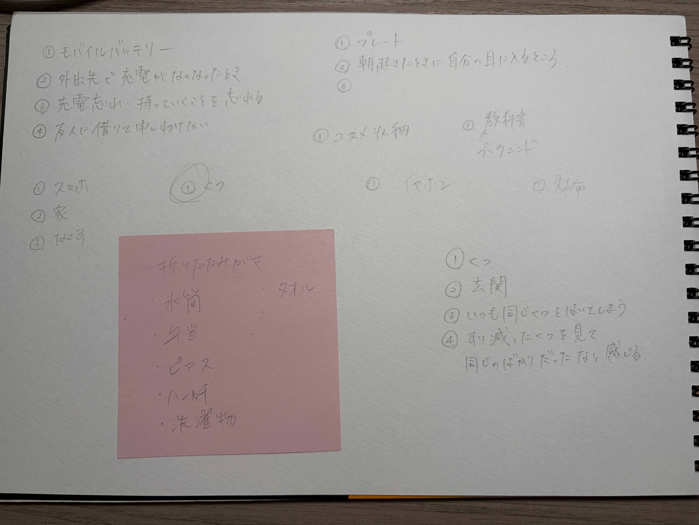
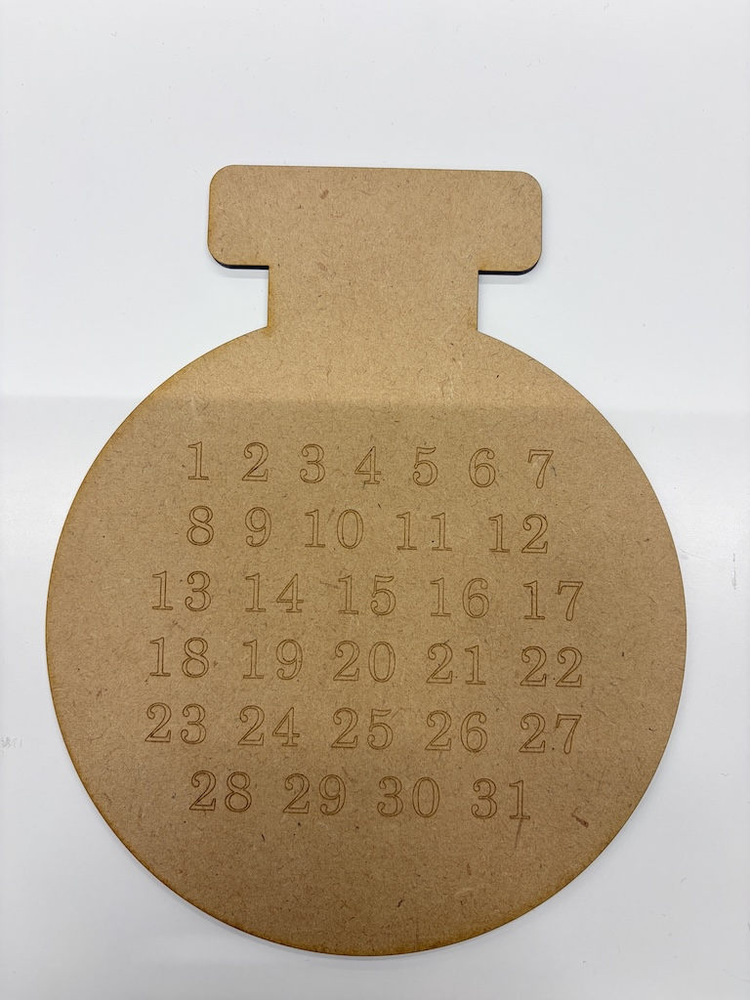
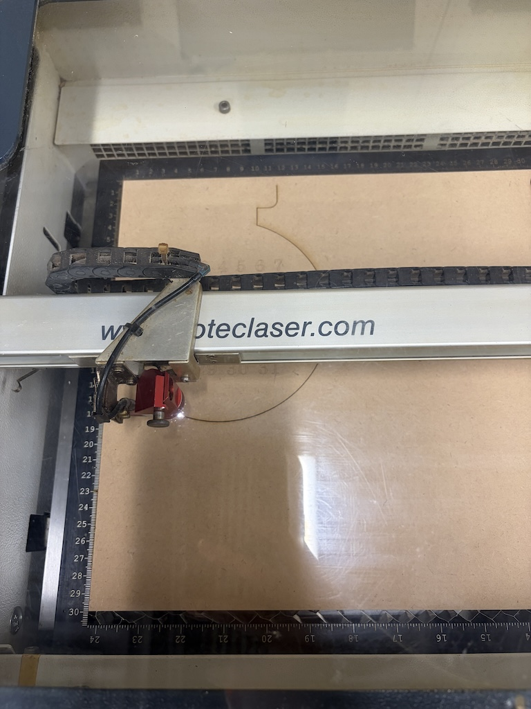
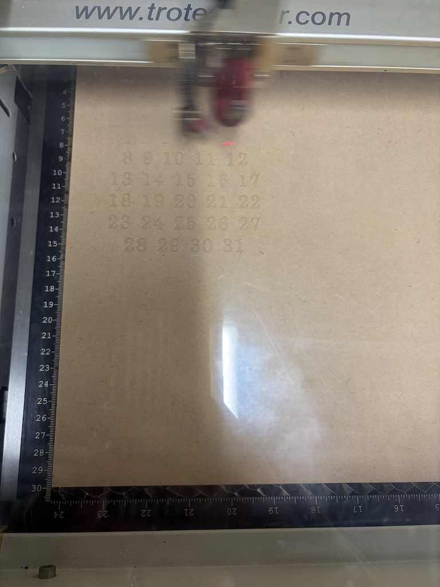
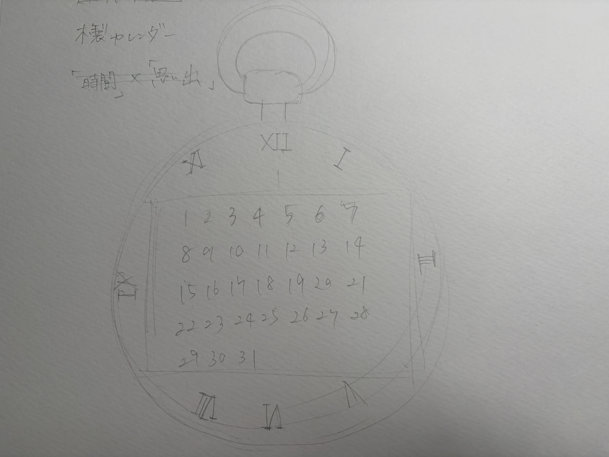

ずっと使えるカレンダー
＜workに向けたスケッチ＞

＜実際の作品の写真＞

＜制作中の写真＞


＜作品の説明＞
この作品は懐中時計を模したカレンダーです。
私がこのカレンダーを制作していた期間は学際準備でとても忙しく、毎日が授業・練習・バイトとただ日々が過ぎていくだけの期間でした
こんな生活を送っているといつか後悔してしまうのではないかと思い、毎日をもっと大切にしたいとアイデアを考えました。
そして、時間の経過を表す「時計」と「カレンダー」を組み合わせました。
このカレンダーは一般的なカレンダーと違う点があります。
月や年の表記をあえてなくし、何月でも何年でも使えるカレンダーになっています。
カレンダーは時間が経過すると破られてしまったり、交換されてしまいます。あえて同じカレンダーずっと使い続けることで時間の経過や思い出を
残して積み重ねていくという意味があります。
＜制作プロセスで調べたこと＞
制作する上で、懐中時計のデザインをどのようにするかを参考にするために様々な画像を参考にしました。
当初はこのような形にしていましたが、制作途中で形を変え、完成品のようになりました。

また私はFusionを使いスケッチを制作し、xy平面で図面を制作していました。
しかし、xy平面だとファブラボのパソコンでAdobe Ilustratorで最終確認をしたときにうまくできませんでした。
そのため下の画像のように、zy平面やzx平面にする必要がありました。